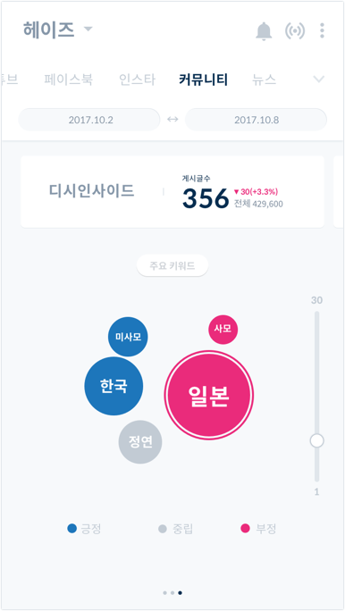

-
OVERVIEW
BeeCanvas is a visual collobartion tool based on the functions of interactive whiteboard. BeeCanvas offers a unified visual workspace for creative projects. Working as a product designer, I participated in researching potential users, our competitor and making marketing contents as well. I wrote articles and made commercials for promoting BeeCanvas. Closely communicating with our clients and listening to their needs was helpful to make marketing stratgy and design as well. -
Team
Osiris-Systems
My Role
User research, Contents marketing
Platform
IOS Mobile, Ipad, Desktop
Year
2017
Introduction
BeeCanvas
Files, Images, Links, Youtube, SoundClound. Collect and organize everything visually in one place. BeeCanvas is a visual collaboration tool that lets you share and comment a image, links, or other multimedia resources on a canvas whatever you want.
Challenges
How to promote BeeCanvas?
It was important to understand when and why people have difficulty doing creative work and convince people to use BeeCanvas. For the better understanding, we needed to do the user research finding out what kind of difficulties and their needs. We also had to search the limit of our competitor and our strength to them.

Goals
-
Quickly Browse
Structure content in a way that encourages interaction, easy skimming, and accessible entry to another menus.
-
Data visualization
A user should be able to understand easily the visualized data.
-
Style & Branding
The UI style should be hip enough so that users don’t feel bored of it because it looks so old-fashioned like the typical analaytic solution.
IA Iterations
Information architecture Iterations
There were several times of iterations on information architecture. The previous structure had sub-menu of their sub-menus, which has too many depths and makes it hard for users to navigate the menu. I suggested that the menu had to be more simple with only one sub-menu. We all agreed on that the last version would be effective and easy to navigate.
Wire
Mid fidelity Wireframe
Our biggest challenge in this project was the navigation of the data from many sources. The content was provided for us by SNS(Facebook, Instagram), Music streaming service(Melon, Bugs, Mnet, Naver Music, Genie, Soribada), Search engine(Naver, Daum etc). It was to important organize the contents, and we divided the menu into two main sections, the first one is updated by pushing the renew button and the other one is crawling data within the range that users manually set.
Reference Research
Data visualization UI
Before diving into UI design concept, I searched many data-related UI design reference.
Design Concept
UI Concept Suggestion
My client and I chose to go with a light, no-clutter, accent-focused colour scheme Version A, to help the user visualise sentiment easily through bright and two contrary colours against a neutral environment.

My client were given the choices between 3 UI concepts and they were satisfied with their final decision.
The Final Design
The Home Screen
The home screen is designed to make it encourages interaction, swipe left and right to access to every data in the app directly accessible. The segmented bar has all categories, which makes artists reach the other data easily with swiping left and right.

Interaction
Soundchart Monitoring
Soundcharts monitors across 6 music streaming services in real-time. It provides an overview for quick reporting as well as an in depth view, choose to dive in to access hourly ranking status and their rank in the service.

Visual language
Data visualization- positive, neutral and negative sentiment
One of the key features that Peter offered was that it gives the information about how people react to their songs. Peter should be able to help user visualise the positive, negative and neutral reactions through the line graph, pie chart and scattergrams. Visualization of sentiment analaysis helps user understand the positive and negative reaction of the content easily.

Style guide
-

Today Views
-

Sentiment Analaysis
-

Keywords
Takeaway
Data analaytics tool at your fingertips
너무 재미없는 데이터분석 툴 같은 느낌이 아닌, 뮤지션들이 자신의 데이터를 좀 더 쉽고, 편안하게 접근할 수 있게 하는 것이 목적. 쉽게 접근하고 자주 드나들 수 있는 서비스. - Data visulization - Communications skill - Understanding their needs